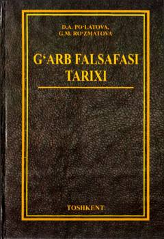

GFQadimgi davrdan hozirgi kungacha G'arb falsafasi tarixi va asosiy oqimlarini yorituvchi o'quv qo'llanma.
Mazkur o'quv qo'llanmada Qadimgi Yunoniston va Rim davlatlaridan boshlab to XXI asrgacha bo'lgan davrda G'arb falsafasining asosiy oqimlari, maktablari va namoyandalarining ta'limotlari tarixiy ketma-ketlikda yoritib berilgan. Kitobda mavzularga oid nazariy matnlar, tayanch tushunchalar, organayzerlar, savol-topshiriqlar hamda faylasuflarning hikmatli fikrlari keltirilgan. Qo'llanma oliy o'quv yurtlari talabalari, magistrantlar va falsafa tarixini mustaqil o'rganuvchilarga mo'ljallangan.